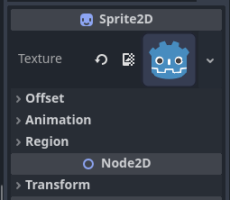

2 - Noder og Scener
Scener i Godot er bygd opp av noder i en tre-struktur. Noder er objekter med en rekke atributter, det er hundrevis forskjellige noder, og du kan definere egene typer noder, men dette skal vi se på senere. Den første noden er kalt en root node, og alle andre noder stammer på den. Så før du kan gjøre noe som helst med scenen din må du lage en root node.
Vi begynner vanligvis med en av de grunnleggende nodene som Godot foreslår når vi sitter i en tom scene.

Om vi nå tar en titt i inspektøren på høyre side kan vi se atributtene til Node2D. Om du ikke ser noe her så klikk på Node2D i Scene listen for å velge den. Node2D er kun et punkt, med de mest grunnleggende atributtene som alle 2D noder har, Posisjon, Rotasjon, Størrelse og Skew. Siden Node2D kun er et punkt og ikke har noen fassong er det kun posisjon og rotasjon som gjør synlige endringer enn så lenge.

Hver gang du endrer på atributter vil du se det dukker opp en rund pil ⟲ , klikk på denne for å sette verdiene tilbake til standard.
Nå skal vi legge til en Sprite2D node. Klikk på
+ oppe i venstre hjørnet av Scene vinduet, finn frem
Sprite2D i listen og klikk på Create. Nå har du en tom
Sprite2D, og vi kan med en gang gi den en tekstur for å gjøre
den synlig, klikk i feltet hvor det står

Om vi tar en titt på inspektøren når vi har valgt Sprite2D ser vi at den har Transform (posisjon, rotasjon, etc) akurat som Node2D, men i tilegg så har den noen ekstra atributter som er unikt for Sprite2D. Tekstur, Offset, Animasjon og Region.

Tips, alle noder som har blå ikoner er 2D noder,
som alle bygger oppå Node2D. Det finnes også 3D noder (rød), GUI noder
(grønne), spesial noder (hvite). Det finnes også noen som gjelder både
2D, 3D eller fler, disse har flerfargete ikoner 
Arv
Nå skal vi bruke Move Mode til å flytte litt på nodene våre.

Legg merke til at når vi flytter Node2D følger Sprite2D med, men når vi flytter Sprite2D blir Node2D stående. Dette er på grunn av arv. En node arver atributter til noden de ligger under.
Tenk deg, vi lager en planet, og så setter vi en person på planeten, når vi flytter planeten blir figuren med, men personen kan bevege seg uten at planeten følger den.

Vi kan se hva nodene arver fra ved å se på streken til venstre for noden i Scene vinduet, her ser vi at Sprite2D peker opp på Node2D.

Arv gjelder også størrelse, gjør vi Node2D større, blir alt som ligger under også større.
Lagre og spille av scene
Over viewporten er fanene for åpne scener, her har vi en scene, scenen vi har jobbet på. den heter [unsaved] fordi vi ikke har lagret den enda. Dette symbolet _(*)_ betyr at vi har ulagrede endringer.

For å lagre scenen gå på Scene > Save Scene, eventuelt bruk Ctrl+S
Gi scenen et navn, ellers får den navnet til den første noden i
scenen, dette blir fort rotete. 
Og nå som vi har en scene så kan vi kjøre “spillet” vårt. Scenen har
nå havnet blandt prosjektfilene våre. Høyreklikk på den og velg Set as
Main Scene. Du kan kun ha èn Main Scene i prosjektet ditt, dette er
scenen spillet går til når spillet startes. 
Nå kan vi klikke på Play oppe til høyre. 
Og vi vill få et vindu som vil se omtrent slik ut, dette er spillet
vårt som kjører. 
Kordinatene X=0 og Y=0 er oppe til venstre i vinduet. Husk det som ble nevnt i del 1, at det spilleren skal se må være inne i den blå firkanten.